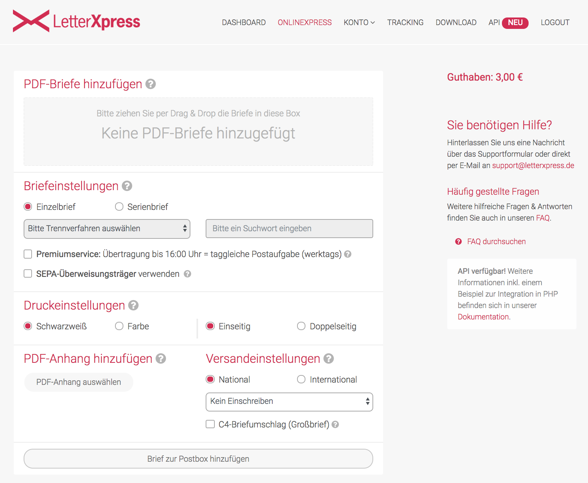
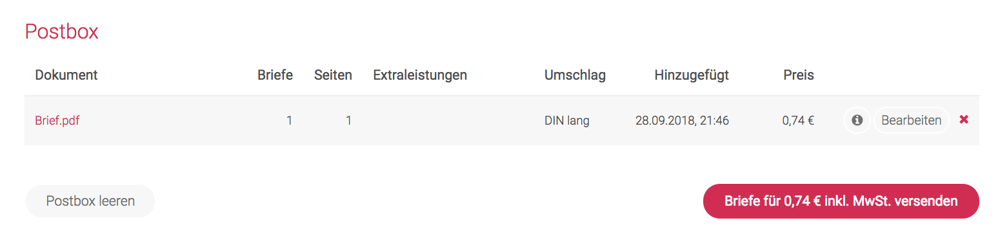

Postversand papierlos
Endlich digital mit „Papiertigern“ kommunizieren!
Nun bin ich seit Jahren papierlos in meinem eigenen Geschäft unterwegs und unterstütze Unternehmen immer wieder darin, sich auch auf diesen Weg zu machen. I walk my talk. Das macht mich glaubwürdig und motiviert die Mitarbeiter meiner Kunden. Sie sehen: Es geht.
Eine Sache ist es allerdings, selbst papierlos zu werden. Eine ganz andere Sache hingegen ist es, papierlos auch in der Kommunikation mit anderen zu sein. Bei mir habe ich alles unter Kontrolle – doch gewisse Institutionen schert mein Wunsch nach der Leichtigkeit der Papierlosigkeit gar nicht. Sie bestehen weiterhin darauf, mit mir in Papier zu kommunizieren. So erhalte ich von Ihnen Papier und werde genötigt, Ihnen ebenfalls Papier zu senden.
Sehr, sehr gelegentlich ist auch noch ein Fax nötig. Doch das habe ich im Griff mit einem Dienst wie https://www.fax-senden.de. Dort kann ich bei Bedarf ein PDF hochladen und es für einen kleinen Betrag versenden. Für mich ist die Kommunikation papierlos – und der Empfänger darf weiterhin durch seinen papierbasierten Prozess schleichen. So ist die Welt für uns beide in Ordnung.
Bei der postalische Kommunikation jedoch hatte ich bisher immer noch Materialien und Werkzeuge vorrätig: Umschläge, Briefmarken, Papier, Drucker. Hier die Nötigung zu einer Rechnung auf Papier, da die Rückübersendung eines Papierformulars, dort ein Vertrag, der dringend der Papierform bedarf. Es ist kaum zu glauben, aber der Glaube, dass Papier noch etwas speziell „Originales“ anhaftet, ist nicht auszurotten.
Zähneknirschend habe ich diese Wünsche gewisser Institutionen also erfüllt und habe Papier produziert, kuvertiert und zu einem Briefkasten gebracht. Geld und Zeit habe ich für diese langsame und ressourcenfressende Kommunikationsform verschwendet, um meine Gegenüber glücklich zu machen.
Doch damit ist nun Schluss! Endlich!
Umschläge und Briefmarken sind entsorgt. Ich brauche sie nicht mehr. Dass ich irgendwelche Institutionen überzeugt hätte, auf eine papierlose Kommunikation umzusteigen, müssen Sie natürlich nicht annehmen. Ich befriedige ihren Papierhunger weiterhin – doch das tue ich nicht mehr selbst. Dafür habe ich nun einen Dienst gefunden, der sehr geschmeidig funktioniert.
Errettet hat mich https://www.letterxpress.de!

Es gibt weitere ähnliche Dienste, wie ich inzwischen festgestellt habe. Doch LetterXpress hat mich mit seinem modernen Design und der fokussierten Benutzeroberfläche einfach angesprochen. Und dieses Äußere hat nicht zu viel versprochen. LetterXpress hält, was es verspricht: den postalischen Versand von PDF-Dokumenten auf Mausklick.
Und so funktioniert’s:
- Dokument als A4 PDF erstellen. Das geht mit einem Textprogramm wie MS Word ganz leicht. Im Grunde müssen Sie nichts an Ihrer Dokumentenproduktion ändern. Sie ersetzen den Ausdruck lediglich durch die Speicherung als PDF-Dokument.
- Falls das Dokument keinen Briefkopf für einen Fensterumschlag haben sollte, noch ein Anschreiben formulieren und als A4 PDF speichern.
- Das Anschreiben mit der Maus auf die Fläche unter „PDF-Briefe hinzufügen“ ziehen (siehe obiges Bild).
- Das Dokument bei „PDF-Anhang“ auf der Festplatte auswählen.
- Ggf. Einstellungen im Formular ändern: Ich wähle z.B. farbigen Druck oder gelegentlich doppelseitigen Druck. Bei mehr als 2-3 Seiten ist auch noch „C4-Briefumschlag“ anzuraten.
- Brief mit „Brief zur Postbox hinzufügen“ für den Versand vormerken.
- Wenn Sie mehrere Briefe versenden wollen, wiederholen Sie diese Schritte. Am Ende versenden Sie dann mit einem weiteren Mausklick alle in der LetterXpress gesammelten Briefe.

Die Kosten sind gering, wie der Screenshot zeigt: Für einen Brief fallen 0,74€ an. Das sind 0,04€ mehr als das Porto für einen Standardbrief (Stand 2018). Ein Preis, den ich sehr, sehr gerne dafür bezahle, dass ich mir Ausdrucke spare, keine Briefumschläge mehr horten muss, keine Briefmarken vorhalten muss für Porto, dass sich bis zu ihrem Gebrauch doch wieder verändert hat, und nicht zum Briefkasten laufen muss.
LetterXpress ist der Dienst, der für mich die vielleicht letzte Lücke bei meiner Papierlosigkeit schließt. Ich kann nun sogar Papierhungrige bedienen, ohne selbst Papier in die Hand nehmen zu müssen. Ich bin begeistert!
Endlich kann ich mir das Nörgeln ersparen, wenn ich wieder mal zu einer postalischen Kommunikation genötigt werde. Geradezu mit Kusshand komme ich solcher Aufforderung ab jetzt nach in der Gewissheit, dass ich es einfach habe – und meine Gegenseite noch im schwergewichtigen Prozess festhängt.
Schöne neue online Servicewelt!
Weitere Artikel

Digitale Tools für Zusammenarbeit im Office
E-Mail, Digitale Ablage und eine Branchensoftware sind schon lange nicht mehr genug für effiziente Zusammenarbeit. Doch bevor Sie sich in einem Dschungel an digitalen Werkzeugen verlieren, sollten Sie sich über die Systematik …

Veränderung braucht Gewohnheit
Sowohl im Berufs-als auch im Privatleben sind wir ständig im Veränderungsmodus. Manche Veränderungen wollen wir umsetzen, manche müssen wir mitmachen. Wir alles wissen, dass Veränderung nie leicht sind und je länger wir etwas auf …